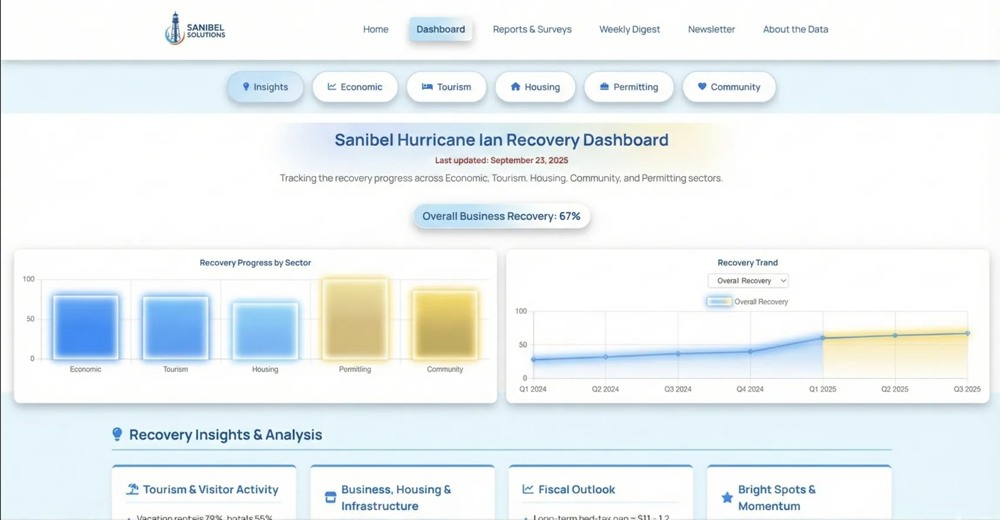

Before
~40 metrics spread across agencies. Leaders had no single, current picture of recovery.
Workshops are the front door. This is where it leads—students embedded inside local teams, capturing workflows, automating the busywork, and building the apps and dashboards that change how the work gets done.

After Hurricane Ian, roughly forty recovery metrics—building permits, sales and bed tax, tourism—were scattered across agencies, with no shared view of how the island was coming back.
Multi‑month integration engagements where our students work inside the company—mapping how the work gets done and automating the repetitive parts, so the AI capability stays in‑house.

A Southwest Florida manufacturer in storm protection. We’re capturing team workflows and building AI automations that take busywork off their plate—an ongoing, multi‑month engagement.

A Naples real‑estate firm. Our students are embedded in the team to document how the work gets done and automate the repetitive steps, freeing people for higher‑value work.
More engagements are underway—some clients we can’t name yet. Talk to us about yours →
We map how the work actually gets done—every task, handoff, and where the hours go.
We find the repetitive steps AI can take off the team’s plate and wire up the automations.
Internal apps and dashboards your team actually uses—like Sanibel’s live dashboard.
FGCU students work as agents of change, so the capability stays after we’re done.
Tell us where the hours go, and we’ll show you what AI could take off your team’s plate.